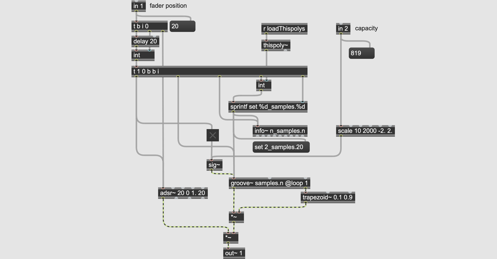

premature
dedicated to Bauhaus
Odbayar Batsuuri / coreografia
Alberto Barberis / musica
2019

introduzione e concetto
l'opera
;
dettagli tecnico-compositivi
#ifndef fader
#define fader
// classe fader.h
class Fader{
private:
const int minFaderVal=20; // for mapping calibration
const int maxFaderVal=1023; // for mapping calibration
const int runLengthTime = 80; // amount of time the motor runs to get from one side to the other at max speed (255)
const int capacitiveThresh=100;
int motorStep; // amount of milliseconds the motor will run in one direction
int faderPin;
int analogFaderVal=0;
int faderPosition=0;
int currentFaderPos=0;
char faderSerialComunication;
char touchSerialComunication;
public:
Fader(char,char,int);
void setPosition(int);
int getFaderPin();
int getFaderPosition();
void printToMax(long);
};
// definisco una funzione con i :: che sta a dire che è un metodo che fa parte della classe Fader: è il mio costruttore
Fader::Fader(char f,char t, int p){
faderPin=p;
faderSerialComunication=f;
touchSerialComunication=t;
}
void Fader::setPosition(int p){
analogFaderVal=p;
// force calibration of min value for mapping (because the sensor is not going from 0 to 1023, but from around 20 to 1023)
if(analogFaderVal<=minFaderVal){
analogFaderVal=minFaderVal;
}
// map fader val to fader time to get from one side to the other at 255 speed
faderPosition = map(
analogFaderVal,
minFaderVal,
maxFaderVal,
0,
runLengthTime
);
}
void Fader::printToMax(long ta){
if(faderPosition!=currentFaderPos){
currentFaderPos=faderPosition;
Serial.println(faderSerialComunication);
Serial.println(faderPosition);
}
if( ta > capacitiveThresh ) {
// print "t" to Max only once to toggle metro for serial receive, and then exit
Serial.println(touchSerialComunication);
Serial.println(ta);
}
}
int Fader::getFaderPin(){
return faderPin;
}
int Fader::getFaderPosition(){
return faderPosition;
}
#endif
/**** MOTOR LIB ****/
#include
#include
#include "fader.h"
/**** CAPACITIVE LIB ****/
// both pins go to pin T on fader
#include
// Create the motor shield object with the default I2C address
Adafruit_MotorShield AFMS = Adafruit_MotorShield();
// Select which 'port' M1, M2, M3 or M4. In this case, M1
Adafruit_DCMotor *myMotor = AFMS.getMotor(1);
Adafruit_DCMotor *myMotor2 = AFMS.getMotor(2);
Adafruit_DCMotor *myMotor3 = AFMS.getMotor(3);
int touchSendPin = 22; // with 1M resistor
int touchSendPin2 = 24; // with 1M resistor
int touchSendPin3 = 26; // no resistor
int touchReceivePin = 23; // no resistor
int touchReceivePin2 = 25; // no resistor
int touchReceivePin3 = 27; // no resistor
CapacitiveSensor touchLine1 = CapacitiveSensor(touchSendPin, touchReceivePin);
CapacitiveSensor touchLine2 = CapacitiveSensor(touchSendPin2, touchReceivePin2);
CapacitiveSensor touchLine3 = CapacitiveSensor(touchSendPin3, touchReceivePin3);
// creo un oggetto della classe Fader
// invocandoò il costruttore
Fader fader1 = Fader('a','b',7);
Fader fader2 = Fader('c','d',8);
Fader fader3 = Fader('e','f',9);
/*****************
SETUP
*****************/
void setup() {
Serial.begin(9600); // set up Serial library at 9600 bps
delay(500);
AFMS.begin(); // create with the default frequency 1.6KHz
//AFMS.begin(1000); // OR with a different frequency, say 1KHz
myMotor->setSpeed(255); // set motor speed
myMotor->run(BACKWARD); // move motor to position 0
myMotor2->setSpeed(255); // set motor speed
myMotor2->run(BACKWARD); // move motor to position 0
myMotor3->setSpeed(255); // set motor speed
myMotor3->run(BACKWARD); // move motor to position 0
delay(500);
myMotor->run(RELEASE); // release motor so that the fader can be moved manually
myMotor2->run(RELEASE); // release motor so that the fader can be moved manually
myMotor3->run(RELEASE); // release motor so that the fader can be moved manually
}
/*****************
LOOP
*****************/
void loop() {
fader1.setPosition(analogRead(fader1.getFaderPin()));
long touchAmount1 = touchLine1.capacitiveSensor(30); // capacitive black magic
fader1.printToMax(touchAmount1);
fader2.setPosition(analogRead(fader2.getFaderPin()));
long touchAmount2 = touchLine2.capacitiveSensor(30); // capacitive black magic
fader2.printToMax(touchAmount2);
fader3.setPosition(analogRead(fader3.getFaderPin()));
long touchAmount3 = touchLine3.capacitiveSensor(30); // capacitive black magic
fader3.printToMax(touchAmount3);
delay(10);
}

esecuzioni
- 02 marxo 2019, Premature, Teatro dell'Architettura, Mendrisio (CH)
- 25 aprile 2019, Premature, ufa-Fabrik, Berlin0 (DE)
- 27 aprile 2019, Premature, Deutsche Hygiene-Museum, Dresda (DE)